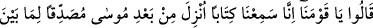
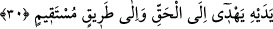

iğneyi bedene deri altına geçirip oraya nakış yapmaktır. İblis “peki onun yemeği nedir?”
dedi. Allah Teâlâ, her leş ve insanların yemeğinden üzerine besmele çekilmeyen her
yemektir” buyurdu. Yâni şeytan bu yemekten hırsızlama alır. İblis “peki onun içeceği
nedir?” dedi. Allah Teâlâ “sarhoşluk veren her şeydir” buyurdu. İblis “peki onun
meskeni, evi, barınağı neresidir?” dedi. Allah Teâlâ “hamamlardır” buyurdu. İblis “peki
onun en çok bulunduğu yerler neresidir?” dedi. Allah Teâlâ “çarşı, pazarlardır”
buyurdu. İblis “peki onun sesi nedir?” dedi. Allah Teâlâ “mizmardır (düdük, kaval,
zurna)” dedi. İblis “peki onun avı nedir?” dedi Allah Teâlâ “kadınlardır” buyurdu.
Sonuçta hamam şeytanların en çok bulunduğu yerdir. Çarşı, pazar zaman zaman gelip
gittiği yerlerdir. Zâhir olan şudur ki îmân etmeyen her cin bu zikredilen konularda iblis
gibidir.
İnsanü’l-uyûn’da zikredildiğine göre cinlerin yemeleri konusunda üç görüş vardır:
Birincisi çiğneyip yutarak yerler, yutarak içerler. İkincisi yemez, içmezler, bilakis
koklayarak gıdalanırlar. Üçüncü görüş cinler iki sınıftır; bir sınıf yer, içer; bir sınıf
yemez, içmez, sadece koklayarak gıdalanırlar. Özetle cinlerin durumları budur.
Âkâmu’l-mercan’da şöyle denilmektedir: Genel durum cinlerin hepsinin yiyip içtiğidir.
İncenin ince, lâtifin lâtif olması yeme ve içmeye engel değildir.
Meleklere gelince; melekler lâtif cisimler olup yemez, içmezler. Bu konuda namaz
ehlinin ittifakı vardır. Bir de bu konuda rivâyet edilen haberler vardır. Âlimler şöyle
demişlerdir: Peygamberimiz (s.a.) kesin olarak cinlere de peygamber olarak
gönderilmiştir. Cinler mükellef ve sorumludurlar. Onlarda da âsî ve mutîler vardır.
Allah Teâlâ’nın bize bildirdiğine göre bir grup cin Peygamber (s.a.)’i görmüş, ona
inanmış ve ondan Kur’ân dinlemişlerdir. Bunlar cinlerden sahâbî olanlardır.
Peygamberi görüp onun sohbetinde bulunmakla diğerlerinden üstün ve faziletlidirler. Bu
durumda cinlerden sahâbelik konusunda durumu bilinenlerin zikri kesinleşmiş olur.
Aliyyü’l-Kârî’ye âid Nuhbe’nin şerhinde de böyledir.
30. Ey kavmimiz! dediler, doğrusu biz Mûsâ’dan sonra indirilen, kendinden
öncekini doğrulayan, hakka ve doğru yola ileten bir kitap dinledik.
Bu cin topluluğu kavimlerinin yanına döndükleri zaman: “Ey kavmimiz, dediler, biz
Mûsâ’dan sonra indirilen,” tevhîde dâvette ve tasdikte nübüvvet ve âhiret işinin
gerçekliğinde, ahlâkı temizleyip güzelleştirmede “kendinden öncekini doğrulayan,”
kendinden önceki Tevrât’a ve diğer ilâhî kitaplara muvafık olan “gerçeğe”, sağlam
îmâna ve bu dinin genel prensipleri ve sâlih amellerden ibaret olan ve kendisinde hiç
eğrilik olmayan “doğru yola götüren bir kitap dinledik.”